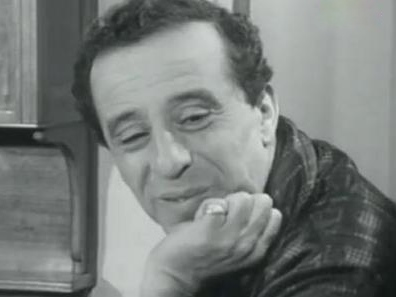

CULTURERouiched, un géant de la comédie algérienne |
|
|---|---|
Auteur :
|
Num:0999666333 |
Menu |
 |
Rouiched
|
|---|
Rouiched de son vrai nom Ahmed Ayad , est un acteur et humoriste algérien. Il est né le 28 avril 1921 à Alger au sein d'une famille originaire d'Ait Djennad dans la wilaya de Tizi Ouzou.
Rouiched est d'origine kabyle (Commune
Azeffoun , Aarch Aït Djennad, Wilaya de
Tizi-Ouzou ). Durant l'enfance, il fait mille petits métiers
pour survivre. Autodidacte, il obtient son premier rôle dans
un pièce de Abdelhamid Ababsa intitulée Estardjâ yâ assi (Reviens
à toi Ô inconscient).Son interprétation sauve la pièce du four. Il se
lance alors dans la profession et devient animateur d'une troupe
artistique. Il côtoie les grands noms de l'époque :
Rachid Ksentini, Mustapha Badie, Nadjat Tounsi, Sid-Ali Fernandel,
Mohamed Touri, Mustapha Kateb…
Sa conception de l'art et du théâtre lui vaut
les griefs de Mahieddine Bachetarzi .
Après l'indépendance, il fait partie de la troupe du Théâtre national
algérien, mais obtiendra la consécration dans le film de
Mohamed Lakhdar-Hamina Hassan Terro . Il
poursuit sa carrière à la Télévision
Algérienne où il va jouer dans de nombreux sketches et téléfilms jusqu'à
sa mort.
Rouiched est une très grande figure du théâtre et du
cinéma comique algérien.
Dictionnaire des musiciens et interprètes Algériens, Achour Cheurfi, ANEP Ed. Alger 1997
Il s'agit d'un film comportant de grands traits comiques, et apparemment
le premier à le faire concernant cette période, tout comme l'avait fait en
France La Grande Vadrouille pour la période de
l'Occupation
allemande. Le personnage principal montre que même quelqu'un qui n'a rien
d'un héros au départ peut néanmoins se conduire de façon héroïque lorsque
les circonstances l'y conduisent.
Pour envoyer plus d'informations ou corriger certaines informations sur l'acteur Rouiched , vous pouvez nous contacter à ce sujet dans ce formulaire:
- Notices d'autorité : Fichier d’autorité international virtuel.
International Standard Name Identifier. Bibliothèque nationale de France
(données). Système universitaire de documentation.
Bibliothèque du Congrès. WorldCat
- (en) Rouiched [archive] sur l’Internet Movie Database